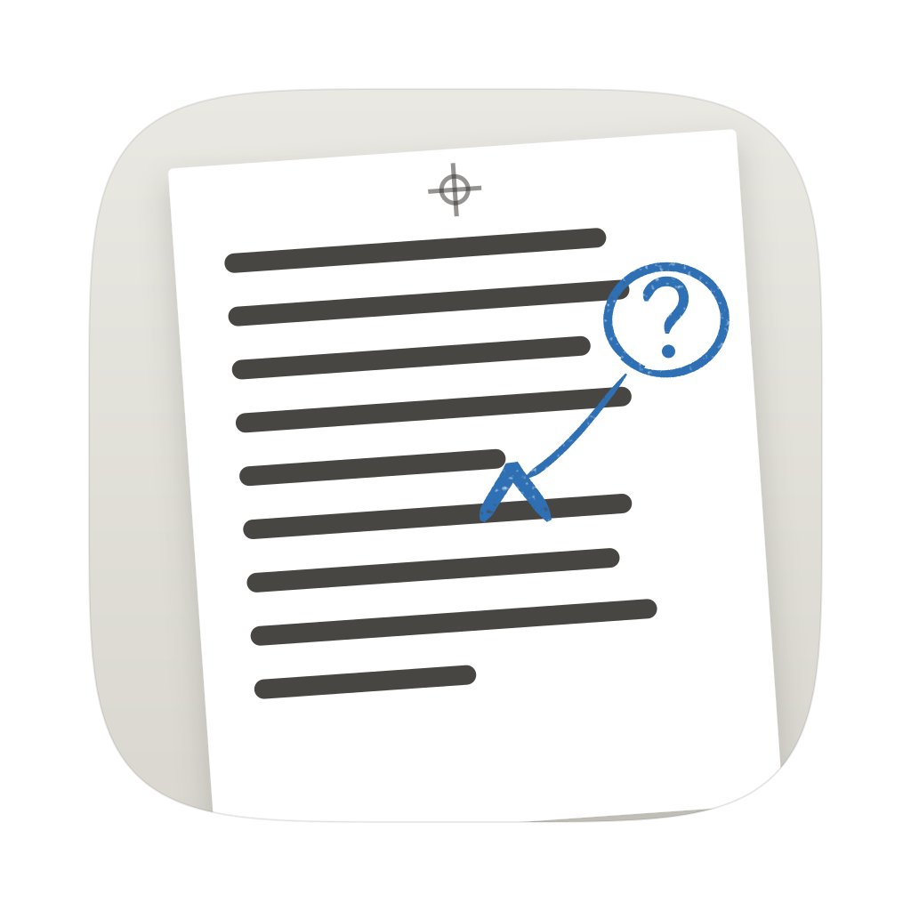
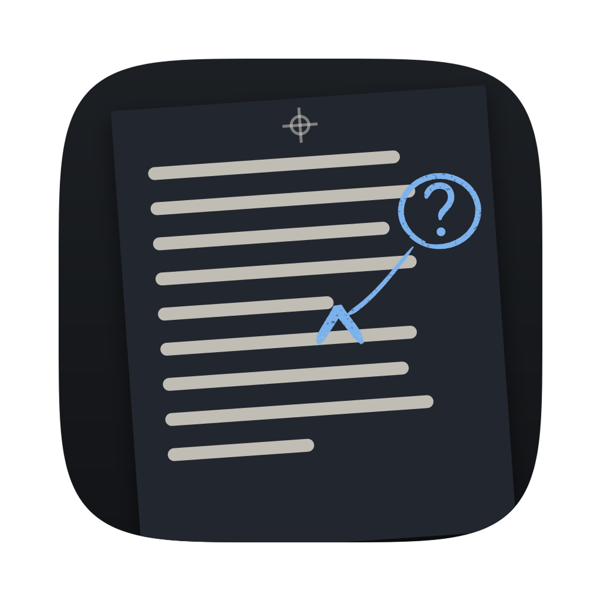

Direction 1 of 3 · The print world
Proof: Inkling as a copy editor
Inkling is a copy editor who only writes queries, in a pencil that never prints.
Switch the pencil off and every mark Inkling made lifts off the page, the way the printer's camera never saw non-photo blue. Switch it back on and each mark returns to exactly where it was.
A galley proof
The long typeset sheet a publisher sends the author before printing, marked up by the copy editor. Three things about it this direction takes, none of them invented:
-
Non-photo blue
Marks in this light blue pencil don't show up when the page is photographed for printing, so editors wrote straight onto camera-ready pages. Here it is Inkling's only colour, and it lifts off.
-
Author queries
A question for the author goes in the margin, circled so the typesetter won't set it, numbered AQ1, AQ2. Every one is answered before the proof goes back.
-
Stet
“Let it stand.” The author turns down a change by putting dots under the original words and writing stet in the margin. Here that is what Dismiss draws.
The app, in this direction
The whole window, working. Open a query, fix the number and watch the query close itself, play the sketch and take it into your note, or lift the pencil.
Inkling's answers in this window are scripted. Keys work too: ⌥⌘↓ jumps to the next open query, ⌘↵ resolves the open one, ⌘⌫ dismisses it, Esc closes it.
Every state, drawn
Fifteen states a note can be in. The quiet ones matter as much as the busy ones: most of the time Inkling is reading and saying nothing, and the page has to show that without fuss. Each title opens that state in the app above.
The mark
The wordmark is “inkling” set in Literata, with the dot of the first i replaced by a blue-pencil caret: the copy editor's sign for “something goes here”. The second i keeps its ordinary dot, so the change reads as a decision, not a glitch.
- One motionThe caret goes up to its point and straight back down, as a hand draws it, with the right leg a little longer.
- Non-photo blueThe only blue in the mark. It is the same pencil that writes every query, so the logo is made of the app's own marks.
- The second iKeeps its round dot. One changed dot reads as intent; two would read as a typeface.
- Clear spaceKeep one caret-height clear on every side. Below 20 px tall, the caret is drawn solid, without grain.
A proof of the letter i: crop marks, a registration mark, and the caret where its dot should be. At 16 px it still reads as a black i with a blue mark. It is a full rounded square, so macOS 26 won't put it in a grey tile; clear and tinted versions come with the build.


Considered: a proof strip with a pencil-circled query in its margin. It tells the story better at 256 px, but below 64 px it turns into a generic document icon, and the Dock is full of those. The i won.
The marks, one by one
Every mark Inkling or you can make, at the size it appears in the app and enlarged. Each hand-drawn one is a tapered ribbon around a centre line, from one source file (assets/proof/marks.js) that the app will port to Rust. Standalone SVGs are in assets/proof/elements/.
Colour, by job
Two colours do the talking: ink for your words, one blue for everything Inkling does. Graphite is you answering. There is no red anywhere: Inkling isn't grading you. Contrast is measured on this page, against the colour each one sits on.
Proof · light
Lightbox · dark
Three faces, four sizes
Your words in a book face, Inkling's in a narrow sans, numbers in a mono. The split is the point: a query can never be mistaken for something you wrote.
Literata
Your words. A text face drawn for long reading on screens, with optical sizes, so the 17 px body and the 28 px title are each cut for their size.
Sub-50 10k by March
If I hold 5:30 for the whole race, I'll come in just under 50.
IBM Plex Sans Condensed
Inkling's voice and every control. Narrow, so a three-line query fits a 260 px margin; a sans, so it never passes for your writing.
IBM Plex Mono
Paragraph numbers, AQ tags and times. Every digit the same width, so 4:55 and 5:30 line up.
AQ1 · ¶2 · 4:55 × 10 = 49:10 · 5:30 × 10 = 55:00
| 12 | Plex Mono for paragraph numbers, AQ tags and times; Plex Sans Condensed caps for running heads. |
| 14 | Plex Sans Condensed for queries, replies, controls and labels. |
| 17 | Literata for your words, line height 1.6, 60 to 70 characters a line. |
| 28 | Literata for note titles and this page's headings. |
Motion and sound
Motion is the pencil moving, nothing else. It runs on marks, never on the text you are typing, and typing cancels any that is running. With reduced motion on, strokes fade in over 120 ms instead of drawing.
What it says
Plain words on every control. The trade's own words (query, stet) appear only where the mark itself teaches them, and in a tooltip's second sentence.
| Controls | ReplyResolveDismissUndoDraw itUse in noteAsk the roomPencil |
|---|---|
| Tooltips | Dismiss: “Leave your words as they are. Editors call this stet.” · Resolve: “Mark this query answered.” · Pencil: “Hide Inkling's marks (⌘⇧.). Your words don't change.” |
| Status lines | AQ1 · OK when you resolved it · AQ1 · settled: 4:55 a km comes to 49:10. That works. when Inkling closed it · AQ2 · worked out · stet · “2 open”, “1 open”, “None open” |
| Reading | Nothing is said. The paragraph number pulses blue while Inkling reads, and a small blue tick means it read the paragraph and had nothing to ask. |
| Empty note | “Start writing. Inkling reads along and puts its questions in the margin, in blue pencil.” |
| First run | “Write one sentence about something you're working on, or something you believe.” Then: “Inkling will read it and ask one question, in the margin.” |
| Offline | “Inkling can't reach Claude right now. Keep writing; it will read what it missed when it's back.” Try again |
| Limit reached | “Inkling has used its reading for now. It can read again at 4:30 pm. Your notes are fine.” |
| Signed out | “Inkling needs your Claude login to read. Run claude in Terminal, then /login, and come back.” |
| A query fails | “That query didn't come through.” Try again |
Where it clicks
Four moments this direction is built around. Each one is something the object already does, carried into the app.
What it refuses, and its risk
- Texture under your words. The paper is a flat colour. Grain lives only in the pencil strokes.
- Handwriting fonts. Inkling's queries are set in Plex Sans Condensed. The hand shows in the marks, never in the letters.
- Red. Red means “wrong” in every app, and Inkling isn't grading you.
- A second blue. Blue means Inkling, everywhere. Other minds get their own pencils.
- Moving your text. Marks come and go above and beside your words. Your words never shift because of them.
The risk
Of the three directions, this is the closest to the paper-notebook family that riddled.ai belongs to: paper, a serif, notes in the margin.
What keeps it apart: cooler, brighter paper; one blue layer you can lift off; a narrow sans for Inkling's voice instead of a serif italic; circled queries in the right margin only; numbered paragraphs that show what has been read.
If it still feels too close once it is in the app, the first thing to push is the margin: wider, with the guide lines doing more of the work.
Things you might have missed
Small decisions that only exist in this direction.
- Query numbers never change. Resolve AQ1 and AQ2 stays AQ2, as on a real proof, so a number means the same thing tomorrow, in chat and in exports.
- Marks are seeded by the query's id. A circle is the same circle every time the note opens. Nothing jitters between renders.
- The guide line runs in the gap under the line of type, so it never crosses letters, even in long paragraphs.
- Paragraph numbers are addresses. ⌘L jumps to ¶ n, and chat can say “in ¶3” and mean it.
- Selection is a graphite wash, not blue, so selecting text never looks like Inkling marked it.
- Who closed it shows. A graphite OK is you; a blue tick is Inkling settling it after your edit.
- Export with queries, when you want. Normally nothing blue prints. An option exports queries as numbered footnotes, for sending a draft to someone with the conversation attached.
- Colour-blind check. Blue and graphite differ in lightness as well as hue, and every state differs in shape: circle, tick, dots, pulse.
- Other minds, other pencils. Skeptic writes in green, Tutor in violet; blue stays Inkling's in every note.
- Night is a lightbox. Dark paper with a faint glow at its edges, as if lit from below, instead of an inverted page.
Building it in GPUI
What changes in the app, file by file. S is under a day, M a few days, L about a week. Most of the work is in the editor and the margin; nothing here needs a new GPUI primitive.
| src/theme.rs | Proof and Lightbox palettes (paper, desk, three inks, pencil, soft pencil, wash, graphite, mind pencils) replace the palette copied from Riddled. | S |
|---|---|---|
| assets/fonts/ | Bundle Literata (Regular, Medium, Italic, at a text optical size), IBM Plex Sans Condensed (Regular, Medium, SemiBold) and Plex Mono (Regular, Medium). Drop Newsreader and Instrument Sans. All OFL. | S |
| src/pencil.rs (new) | A port of marks.js: seeded tapered ribbons, caret, loop, tick and stet dots, as PathBuilder fills. drawing.rs already strokes paths, so this is mostly geometry. | S |
| src/editor.rs | Paragraph numbers in a 56 px gutter with the four read states (read_hashes already knows what was read). The caret painted at each anchor's end. Selection becomes the graphite wash. | M |
| src/margin.rs, note_page.rs | Queries without a card: text, AQ tag and a pencil loop. The bezier tether becomes the guide line, routed along the gap under the line. Resolved and settled chips; stet dots on dismiss; Undo for 8 s. | M |
| Pencil switch | Just my words already hides marks; add the 360 ms lift and 240 ms return, and the ⌘⇧. binding. | S |
| Settle on fix | UX core 3: re-read the anchored sentence after an edit and settle the query with a one-line reason, drawn as a blue tick. | M |
| Figures | A figure block kind in store.rs and editor.rs; blue turns to ink when a sketch moves into the note; exported as an image. | L |
| scripts/bundle.sh | icon.svg to .icns with iconutil, plus the dark variant macOS 26 asks for. | S |